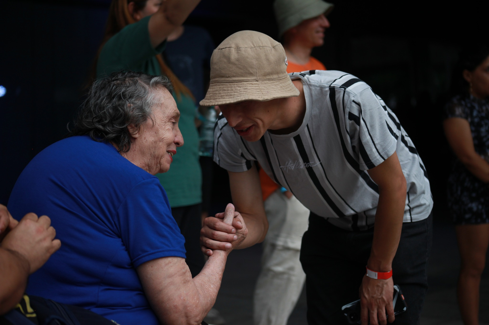
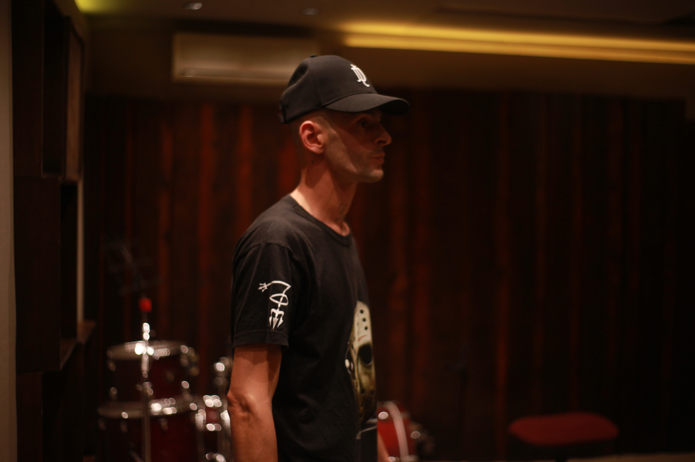

El proyecto surge en la Universidad Nacional Arturo Jauretche como un puente entre la academia y la cultura popular.
Sitio Oficial
No solo hacemos música, habitamos el territorio del Conurbano transformando realidades.



Nuestra voz llega a los medios para contar lo que el barrio calla.


Talleres de escritura, rima y autogestión cultural para jóvenes.

Organización sistemática de activos para presentaciones y difusión cultural.